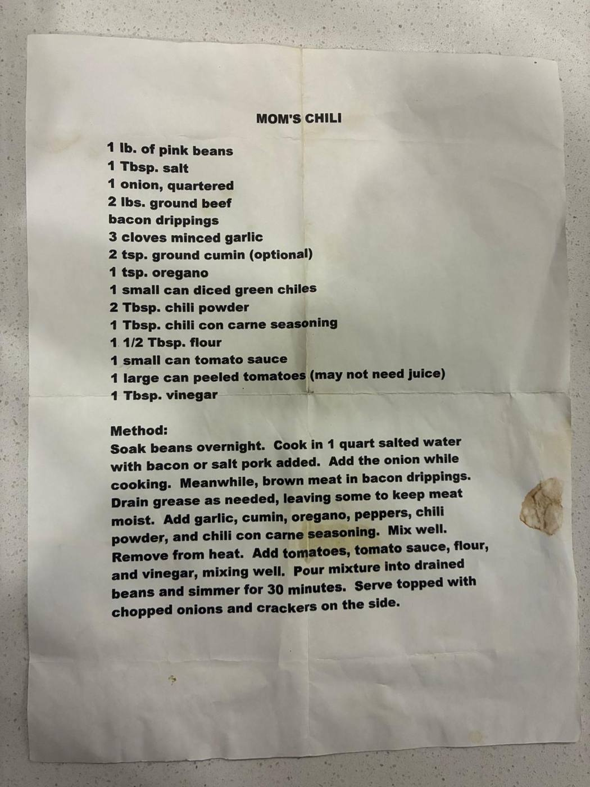

Mains
Mom's Chili
From the kitchen of Mom
SoakBeans overnight
Simmer30 min
ServesA big pot

Mom's original card · tap to enlarge
Ingredients
Method tap a step to mark it done
- Soak the beans overnight.
- Cook the beans in 1 quart of salted water with the bacon (or salt pork) and the onion until tender. Add water if they start to dry out, and keep adding salt to taste.
- Meanwhile, brown the meat in bacon drippings. Drain the grease as needed, leaving some to keep the meat moist.
- Add the garlic, cumin, oregano, green chiles, chili powder and chili con carne seasoning. Mix well.
- Remove from the heat. Add the tomatoes, tomato sauce, flour and vinegar, mixing well.
- Pour the mixture into the drained beans and simmer for 30 minutes.
- Serve topped with chopped onions, with crackers on the side.